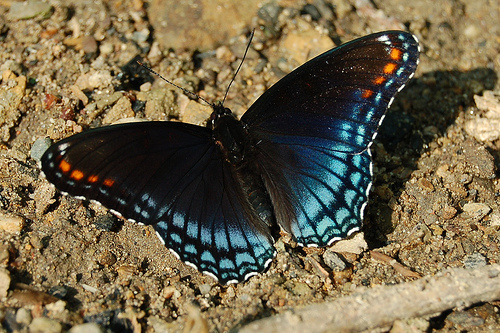

Native to North America, the Red-Spotted admiral, or scientifically known as
Limenitis arthemis astyanax is a butterfly species in the cosmopolitan genus
Limenitis. The L. Artemis (Limenitis arthemis) can be split into two major groups on the
basis of one physical characteristic: a white band along the wings. This species of butterfly
is described to be beautiful and highly active. Looks aside, this species of butterfly is in
constant motion. They tend to fly at lower altitudes and for short durations. When not flying,
this species is constantly walking over leaves and folding their wings. This species of
butterfly also enjoys the sun as they are commonly found resting at the highest points on
trees.
Similar to the Red-Spotted admiral, is the White-Spotted admiral - scientifically known as Limenitis arthemis arthemis. Both butterflies share similairites in all aspects, however, the White-Spotted admiral has a more prominent presence of white on it's wings.
|  | Adult Red-Spotted admiral pictured. (c) myiarchus22 - inaturalist, some rights reserved (CC BY-NC) |

|
Adult White-Spotted admiral pictured. (c) Gilles Gonthier - flickr, some rights reserved (CC BY) |
Preferred plants as hosts in Florida are black cherry (Prunus serotina Ehrh.) and deerberry (Vaccineum stamineum L.) , occasionally willows and possibly species in the family Betulaceae.
The Limenitis Arthemis are found within North America. These butterflies tend to be found in woodlands and within the edges of the forest in shady areas.
Caterpillars tend to feed on yellow birch trees including Betula aleghaniensis and Betula lenta. Adult butterflies tend to feed on rotting druit and nectar from small white flowers.
Eggs last for about 7 days. After hatching, the caterpillars or L. arthemis (Limenitis arthemis) larvae have brown heads and dark brown and yellow bordered bodies. The pupa stage lasts 10-14 days. Past the pupa stage, adult life of these butterflies last around 6-14 days.
The Red-spotted Purple overwinters as larva. The larva born in late summer spend the winter in a hibernaculum made from a folded leaf.
The White Admiral is found in northern reigons of North America. It is found in places like Canada, Alaska and the subaractic.
Both the White and Red-spotted admirals interbreeed in areas such as Minnesota, Pensylvania to Maine. Hybrid offsprings tend to have a combination of traits and features from both forms.
The Red-Spotted admiral is found in more southern areas such as below the Great Lakes to Floarida. This butterfly is mainly found within the Easter half of the U.S., from Pennsylvania to the mid-west. Towards the south it is found in eastern Texas to east Florida.
To find both forms, look for them at the edges of boreal or deciduous forests.They are commonly seen within forest edges, open fields and scrubby habitats. The Red-Spotted can be found along costal plains. The males tend to visit mud puddles.
Since the life-span of these creatures is short, not alot can be said about predeators. However, the biggest threat these creatures face is the impacts of climate change. These butterflies choose to reside in woodland areas and with the increasing negative effects of climate change, these areas become compromised. The compromisation of their habitat leads to dire effects for these creatures in many aspects such as shelter, diet (not having access to leaves they feed on).
| Overwintering: |
Overwintering is the process by which some organisms pass through or wait out the winter season. |
| Hibernaculum: | A place wherein a creature seeks refuge i.e. Bears using caves to overwinter. |
| Larvae: |
The immature, wingless, and often wormlike feeding form that hatches from the egg of many insects. |
| Pupa: |
Stage of a metamorphic insect (such as a bee, moth, or beetle) wherein the insect is enclosed in a cocoon or protective covering, and undergoes internal changes. The term pupae refers to the outer casing. |